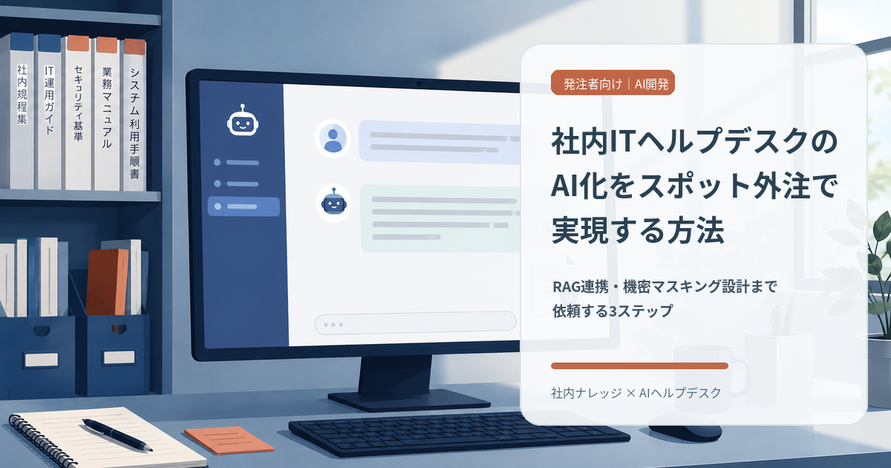
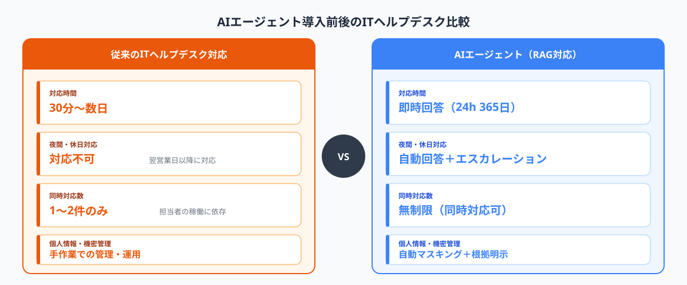
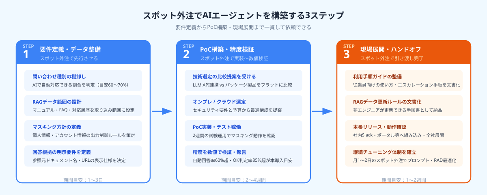

社内ITヘルプデスクのAI化をスポット外注で実現する方法｜RAG連携・機密マスキング設計まで依頼する3ステップ
社内ITヘルプデスクのAIエージェント化を最短で実現する答えは「要件定義からRAG設計・PoC構築まで一括でスポット外注する」ことだ。従業員1,000名規模の企業でも初期構築は2〜3週間、費用は50〜150万円が目安で、情シス担当者が一からAIを内製する必要はない。ポイントは社内マニュアルや過去の対応履歴をRAGとして参照させ、個人情報・アカウント情報は出力させないマスキング設計と、回答の根拠となった参照元を明示する仕組みを最初に設計することだ。本記事では社内ITヘルプデスクのAIエージェント化をスポット外注で実現するための3ステップを解説する。
本記事は2026年8月時点の情報に基づいています。
まず相談だけでも大丈夫です。
ANKENでは社内AIエージェント構築・RAG設計・機密マスキング対応の経験を持つスポットエンジニアをご紹介できます。相談・見積もりは無料です。しつこい営業は一切ありません。
無料で相談する →社内ITヘルプデスクのAIエージェント化が注目される背景

従業員数が数百〜数千名規模の企業では、情シス（情報システム）部門に日々大量の問い合わせが届く。「PCが起動しない」「社内システムのパスワードを忘れた」「このファイルを開くには何のソフトが必要か」——こうした問い合わせは繰り返しパターンが多く、回答の大半は社内マニュアルや過去の対応履歴を参照すれば解決できる。それにもかかわらず、担当者が一件ずつ返信している状況が多くの企業で続いている。
AIエージェントを活用した問い合わせ自動対応が注目される最大の理由は、対応工数の削減と24時間365日の回答対応だ。夜間や休日の問い合わせに即時回答できるようになるだけでなく、担当者はAIが対応できない複雑な案件のみに集中できる。従来のシナリオ型チャットボットと異なり、RAG（Retrieval-Augmented Generation）を活用したAIエージェントは「あらかじめ想定された質問以外にも対応できる」という大きな利点がある。
社内ITヘルプデスクAIエージェントとは：社内マニュアル・FAQ・過去対応履歴などのドキュメントをRAG（Retrieval-Augmented Generation）として参照し、従業員からの問い合わせに対してAIが自動回答するシステム。回答に使った参照元を明示し、個人情報・アカウント情報を出力しないマスキング設計を組み込むことが実務上の必須要件となる。
一方で、社内でこのシステムを一から設計・構築するには、LLM APIの扱い・RAGアーキテクチャの設計・プロンプトエンジニアリング・セキュリティ設計など、幅広い専門知識が必要だ。情シス担当者が本業の傍らで対応するには負担が大きく、専門エンジニアのスポット外注が最も効率的な選択肢になる。
STEP 1｜要件定義・データ整備をスポット外注で先行させる
AIエージェント導入で最初につまずくのが「何を参照データにするか」「どこまでAIに回答させるか」という仕様の曖昧さだ。設計段階の整理をスポット外注で行うことで、実装に入る前に仕様を固め、手戻りを防げる。
① 問い合わせ種別と対応履歴の棚卸しを依頼する
まず過去1〜2年の問い合わせログを件数・カテゴリ別に分析してもらう。「PC不具合系」「システム操作系」「アカウント・権限系」「ネットワーク系」などに分類し、AIで自動対応できる割合（通常は全体の60〜70%）を見極める。この棚卸し作業だけを1〜2日のスポット依頼で完了させることも可能だ。分類結果は後のRAD設計で「何のドキュメントを取り込むか」の判断基準にもなる。
② RAGの参照データ範囲と機密マスキング方針を決める
RAGに取り込む参照データの候補は「社内マニュアル」「FAQ集」「過去の問い合わせ回答テキスト」「設定手順書」などだ。重要なのは、これらのデータに含まれる個人情報（担当者名・メールアドレス）や機密情報（システムのパスワード・認証情報）をどの段階で除外・マスキングするかを設計フェーズで明確にすることだ。
マスキングの実装方法としては、①データ取り込み前に正規表現でパターン除去する方法、②LLMのシステムプロンプトで「個人情報・アカウント情報は絶対に出力しない」という制約をかける方法、③両方を併用する方法がある。機密性の要件に応じてスポットエンジニアに方式を提案してもらうとよい。
③ 回答根拠の明示要件をドキュメント化する
AIが「何を参照して回答したか」を明示する機能は、情シス担当者が内容を確認・修正するうえで不可欠だ。「参照元のドキュメント名を回答末尾に表示する」「参照元URLを付記する」など、具体的な表示仕様を要件定義段階で決めてドキュメント化する。この仕様書はPoC構築の依頼文書としてもそのまま活用できる。
STEP 1の成果物は「参照データリスト」「マスキング方針書」「回答根拠表示仕様」の3点だ。これをスポットエンジニアに1〜3日で作成してもらうことで、次のPoC構築が迷いなく進む。
STEP 2｜AIエージェントのPoC構築をスポット外注で進める

STEP 1で要件を固めたら、次はPoC（概念実証）の構築だ。ここではスポット外注するエンジニアに「技術選定の比較提案」「PoC実装」「精度・マスキング動作の検証」の3点をまとめて依頼する。
① LLM API連携 vs パッケージ製品の比較提案を受ける
社内ITヘルプデスクのAIエージェント化には大きく2つのアプローチがある。
LLM API直接連携型（OpenAI / Anthropic / Google等のAPIを使い、RAGアーキテクチャを独自構築）は、カスタマイズの自由度が高く、ランニングコストを月数万円に抑えられる一方、設計・実装に専門スキルが必要だ。
既存AIパッケージ製品活用型（Microsoft Copilot for M365、ServiceNow AI Agent、kintoneプラグイン等）は、初期設定の工数が低く導入実績も多いが、月額ライセンス費用がかかり、カスタマイズの幅に制限がある。
どちらが適するかは「既存システムの構成」「機密マスキング要件の厳しさ」「予算」によって異なる。スポット外注では「フラットに両方を比較した提案書」を最初に出してもらうよう依頼するとよい。
② オンプレ / クラウドの選択基準を整理する
データの社外流出リスクを懸念する場合はオンプレミス（または閉域クラウド）構成を検討する必要がある。ただし、現実的には多くの中小・中堅企業でクラウド型（AzureやAWS上に構築）を選択するケースが多い。クラウドでも暗号化・アクセス制御・ログ監査の設計を正しく行えば実用上のセキュリティ要件を満たせるためだ。この判断もスポットエンジニアに要件を伝えて提案を受けると、社内での意思決定が早まる。
③ 2週間のPoC稼働で効果を数値検証する
PoC構築後は、実際の問い合わせデータを使って2週間程度テスト稼働させる。確認すべき指標は「自動回答率」「回答精度（担当者によるOK判定の割合）」「マスキング動作のエラー件数」「参照元表示の正確さ」の4点だ。この数値を社内で共有することで、本導入の判断がしやすくなる。目安として、自動回答率60%以上・OK判定率85%以上が達成できれば本導入の判断基準を満たすことが多い。
STEP 3｜現場展開・運用保守をスポット外注でハンドオフする
PoCの結果が良好であれば、次は本番展開と運用保守体制の整備だ。情シス担当者が無理なく運用を引き継げるよう、スポット外注でドキュメント整備と引き渡し作業まで行ってもらう。
① 現場スタッフ向けの利用手順を整備する
AIエージェントを社内Slackやチャットツール、ポータルサイトに組み込んだ場合、利用者（従業員）向けの簡単な使い方ガイドが必要になる。「どんな質問を入れればよいか」「AIの回答に確信が持てない場合は誰に連絡するか」「フィードバックはどこから送るか」などを整理したドキュメントをスポットエンジニアに作成してもらう。これを最初の発注仕様に明記しておくことで、引き渡し後のトラブルを防げる。
② RAGデータの定期更新ルールを内製化できる形で文書化する
AIの回答精度は参照データの鮮度に依存する。システムのバージョンアップ・業務ルールの変更があれば、RAGに取り込むマニュアルも更新しなければならない。スポットエンジニアには「データ更新の手順書（非エンジニアでも実行できるレベル）」も成果物として納品してもらうよう最初の依頼仕様に明記する。月1回の更新でも精度を維持できる仕組みにしておくことが現実的な運用の鍵だ。
③ 継続的なチューニングをスポットで確保する
本番稼働後は「AIが誤った回答をした件数」「従業員からのフィードバック」を定期的に集計し、プロンプトやRAGデータの調整が必要になる。この継続チューニングも「月1〜2日のスポット外注」という形で柔軟に依頼できる。フルタイムでエンジニアを確保する必要はなく、ANKENでは保守チューニング専用の小口依頼にも対応したエンジニアを紹介している。
導入事例：AIヘルプデスク化の3事例
事例①：製造業（従業員800名）の情シス担当者2名でも運用できる体制を実現
機械部品メーカーA社では、情シス担当者2名が月600件超の問い合わせ対応に追われていた。ANKENでスポットエンジニアを2週間依頼し、社内ConfluenceのドキュメントをベースにしたRAGを構築。個人情報マスキングと参照元表示を組み込み、自動回答率68%・担当者のOK判定率91%を達成した。情シス担当者の対応工数は約60%削減され、複雑な案件対応と社内システム整備に集中できるようになった。
事例②：ITサービス企業（従業員1,200名）でkintone連携のAIエージェントを導入
社内問い合わせ管理にkintoneを活用していたBサービス企業では、過去5年分の対応履歴データ（約1万2,000件）をRAGのデータソースとして活用。スポット外注で1ヶ月かけて設計・実装・テストを完了し、社内Slackから自然言語で質問できるAIエージェントを本番稼働させた。対応時間の平均が「数時間〜数日」から「即時回答」に改善され、夜間・休日の問い合わせもAIで受け付けられる体制になった。
事例③：小売チェーン（従業員2,000名）で夜間・休日対応のゼロ化を実現
全国に店舗を持つ小売チェーンC社では、店舗スタッフからの「POSレジが動かない」「棚卸しアプリの操作方法がわからない」といった問い合わせが夜間・休日にも集中していた。AIエージェント導入後は夜間・休日の問い合わせ約70%がAIで完結。情シス担当者が翌営業日に確認すべき「エスカレーション案件」だけが残る運用に移行し、担当者の過重労働が解消された。
よくある質問
- Q. 社内ITヘルプデスクのAIエージェント化にかかる費用はどのくらいですか？
- A. 要件定義・RAG設計・PoC構築のスポット外注費用は50〜150万円が目安です。既存パッケージ製品を活用する場合は月額SaaS費用が別途かかりますが、LLM API直接連携で内製する場合はランニングコストを月数万円に抑えられるケースもあります。
- Q. 個人情報や社内の機密情報が漏れないか心配です。どう対策しますか？
- A. 設計段階でマスキングルールを定義し、個人名・アカウント情報・社外秘情報を正規表現やLLMプロンプト制御で出力させないよう設定します。回答に使った参照元を明示する仕組みも組み込むことで、AIが何を根拠に答えたかを監査できる状態にします。
- Q. 既存のヘルプデスクシステムやkintone、SharePointとの連携は可能ですか？
- A. 多くの場合、APIまたはファイル形式でのデータ連携が可能です。kintoneやSharePoint、社内共有サーバーのドキュメントをRAGのデータソースとして取り込む実績を持つスポットエンジニアも多く、ANKENでマッチングできます。
まとめ
社内ITヘルプデスクのAIエージェント化をスポット外注で実現するための3ステップをまとめる。
STEP 1：問い合わせ種別・対応履歴を棚卸しし、RAGの参照データ範囲・機密マスキング方針・回答根拠の明示要件をドキュメント化する。設計フェーズだけをスポット依頼することで、仕様の曖昧さをゼロにして実装に入れる。
STEP 2：LLM API連携 vs パッケージ製品、オンプレ vs クラウドをスポットエンジニアにフラットに比較提案してもらったうえで、2週間のPoC稼働で自動回答率・マスキング動作・参照元表示の精度を数値検証する。
STEP 3：利用手順の整備・RAGデータ更新ルールの文書化・継続チューニングのスポット体制を整えて引き渡す。情シス担当者が月1〜2日のスポット外注でシステムを維持できる状態をゴールとして設計する。
「まず情報収集だけしたい」という段階でも相談できる。ANKENでは初回相談・見積もりを無料で受け付けている。
社内ITヘルプデスクのAI化をスポット外注で相談する（無料）
RAG設計・機密マスキング・根拠明示の設計経験を持つスポットエンジニアをご紹介します。まず要件をお聞かせください。初回相談・見積もりは完全無料です。
無料で相談・見積もりを依頼する →